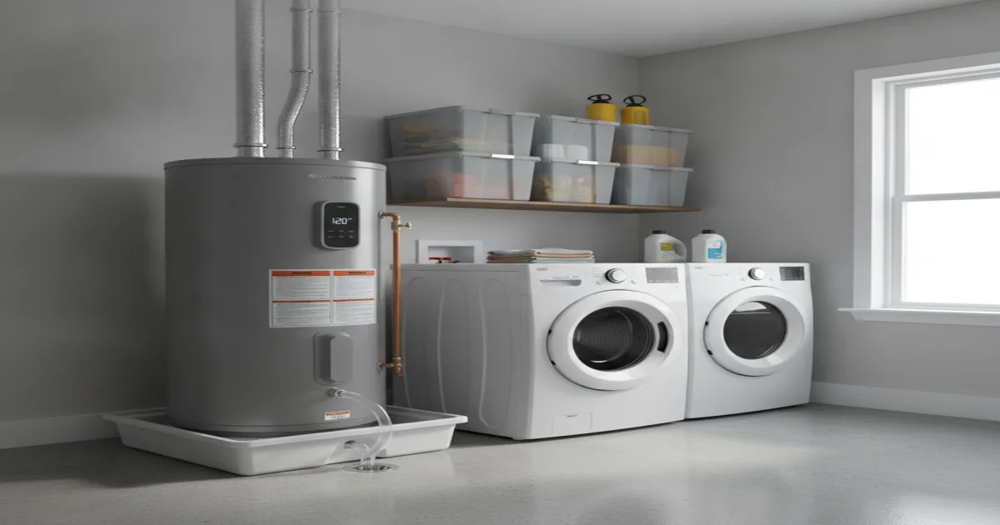
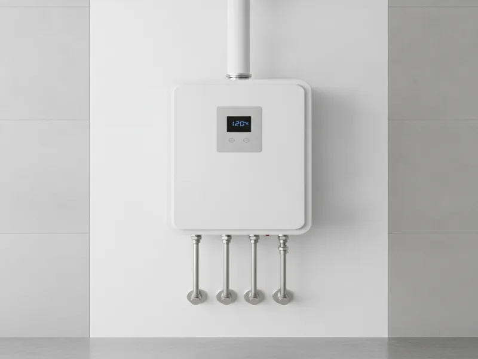
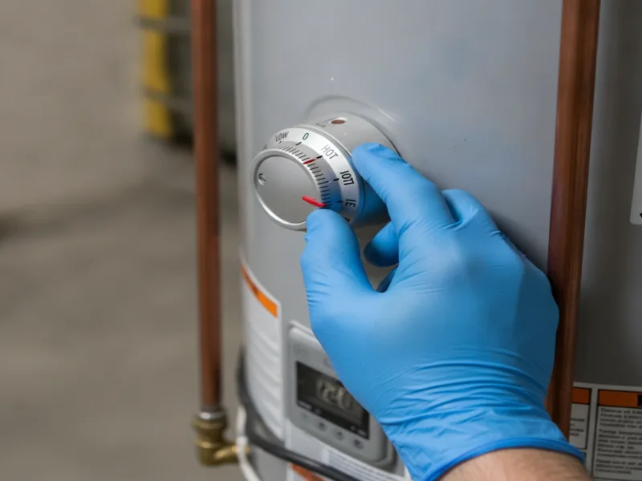

Water Heater Installation in Armonk, NY
Whether your water heater is on its last leg or you're building out a new bathroom, we help you pick the right size and type, then install it correctly the first time — with clear, upfront pricing.
- Licensed & Insured
- Same-Day Service Available
- Upfront Pricing
- 15+ Years of Experience
- Emergency Plumbing Available
- Locally Owned & Operated

Our installation process
We start by looking at your household's hot water needs — how many bathrooms, how many people, and how you use hot water day to day. From there, we help you choose the right size and type of unit, whether that's a standard tank, a higher-capacity tank, or a different setup entirely.
Before installing anything, we walk you through your options and give you a clear, upfront price. Once you approve the work, we remove the old unit, install the new one to code, connect the water and gas or electric lines, and test everything thoroughly before we consider the job done. We also explain the basics of your new unit so you know what to expect.
Cost factors
A few things affect what a water heater installation involves. The main ones are the size and type of unit you need, whether it's a straightforward swap or needs new venting or line work, whether you're switching fuel types (like electric to gas), and how easy your current unit is to access.
Replacing a water heater with a similar model in the same spot is usually the most straightforward job. Upsizing to a larger tank, relocating the unit, or switching to a different fuel source or system type adds more to the scope. We look at your specific setup and give you the full picture before any work starts.
Local factors
Armonk and the surrounding Westchester County towns have a lot of larger homes with three, four, or more bathrooms, which puts real demand on a water heater during busy mornings. A tank that was sized for a smaller household — or for the home's previous owners — often can't keep up once every bathroom is in regular use. Getting the size right upfront saves you from running out of hot water during a shower because someone started the dishwasher.
We also get asked often whether a standard tank or a tankless system makes more sense. Tankless units heat water on demand instead of storing it, which can be a good fit for larger households or homes with limited space for a tank, though they come with their own cost and installation tradeoffs. If you want to go deeper on the tankless water heater option, we walk through the pros and cons on that page. For general background on sizing and efficiency standards, the U.S. Department of Energy (energy.gov) publishes guidance on matching a water heater's capacity to a household's actual hot water use.

Maintenance and prevention
- Flush sediment from a tank water heater periodically — buildup reduces efficiency and shortens the tank's life.
- Check the temperature and pressure relief valve occasionally to make sure it's functioning.
- Keep the area around the unit clear so it can vent and drain properly if there's ever a leak.
- Address a pilot light that won't stay lit or a breaker that keeps tripping right away — both point to a developing problem.

When to call a pro
Call us as soon as you notice rust-colored water, unusual noises from the tank, water pooling at the base, or hot water that runs out faster than it used to — these are signs the tank is on its way out, worth addressing before they turn into a flooded utility closet. Age matters too: most tank water heaters last somewhere around 8 to 12 years, and if yours is in that range and starting to act up, it's usually more practical to replace it on your schedule than to wait for it to fail on its own, often during a shower. If your water heater is gas-fired and you're also dealing with the gas connection, our our gas water heater installation service covers that specifically.
If the unit is fixable rather than failing outright, ask us about repairing rather than replacing your water heater — we'll always tell you honestly which option makes more sense for your situation. For everything else we handle, see the full range of plumbing services we offer or our complete list of plumbing services.
Frequently asked questions
How do I know what size water heater I need?
It depends on the number of bathrooms, household size, and how you use hot water. We look at your specific home and recommend a size that keeps up with real demand, not just a generic guess.
How long does a water heater installation take?
A straightforward like-for-like replacement is usually completed in a single visit. Jobs that involve new venting, relocating the unit, or a fuel type change take longer, and we'll give you a timeframe upfront.
Should I get a tankless water heater instead of a tank?
It depends on your household size, space, and budget. We'll walk you through the tradeoffs honestly so you can decide what fits your home best.
Do you install both gas and electric water heaters?
Yes. We handle both fuel types, including the gas connection work for gas-fired units.
Will you help me decide between repairing and replacing my current unit?
Yes. We'll look at the age and condition of your current water heater and give you an honest recommendation, not just a sales pitch for a new unit.
Do you offer upfront pricing before starting the installation?
Always. You'll know the full cost before we begin any work.